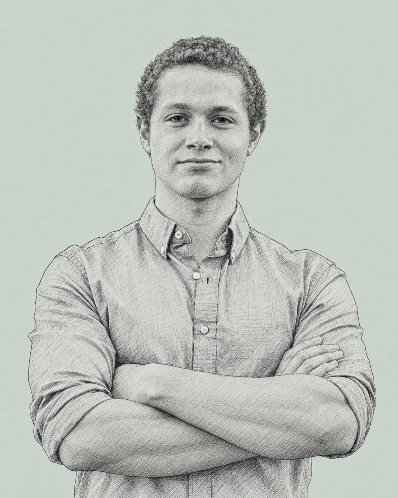

PhilipBankier
Co-founder of Kairox AI.
Building ActRun and writing The Living Edge.

Selected work
Writing
Research library
Research notes from April and May 2026.
- May 2026
Mobile Devices as Agent Nodes
A field guide comparing Android and iOS automation tools, host requirements, and setup approaches.
The April 2026 AI Agent Roundup
An April review of agent tools and model announcements, including memory systems and security developments.
The 2026 AI Agent Playbook
A field brief comparing agent architectures and deployment tradeoffs, with sections on context and memory.
- April 2026
The Landscape of Taste Transfer
A research map of approaches to capturing creative voice, from prompting and retrieval to model adaptation.
Code
All repositoriesawesome-agent-skills
A directory of skills and tools for AI coding agents.
tastekit
Interviews you about how you want AI agents to work, then writes reusable instruction files.
codex-handoff-skill
A skill for handing coding plans to Codex CLI.
brain-dump
Backup tooling for AI agent memory, built around restic.
agent-cli-skills
A skill library for AI command-line agents.
lex-the-computer
A self-hosted workspace for AI chat and scheduled tasks.
technical-visualizer
Turns code and technical documents into HTML visual drafts, with optional AI image generation.
riskradar
Portfolio risk analysis and visualization.
Get in touch.
For projects and collaborations.